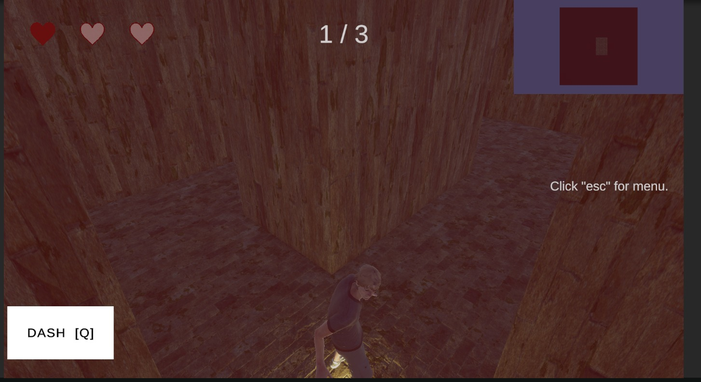
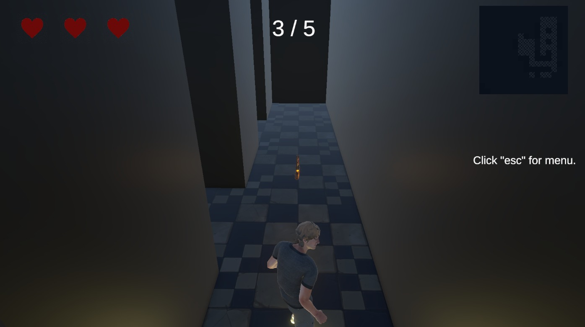
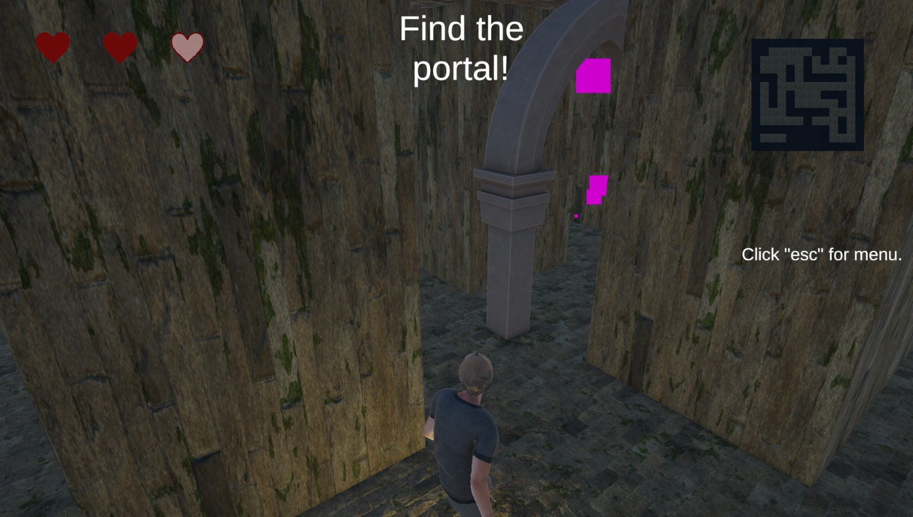
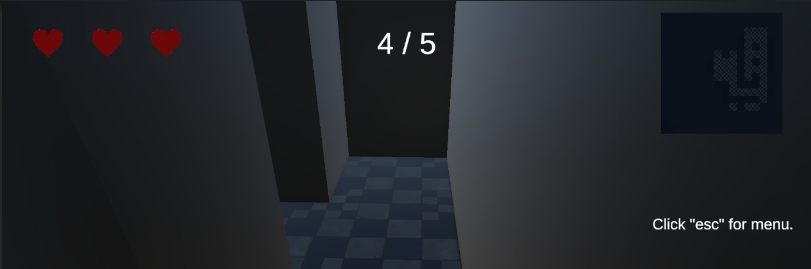
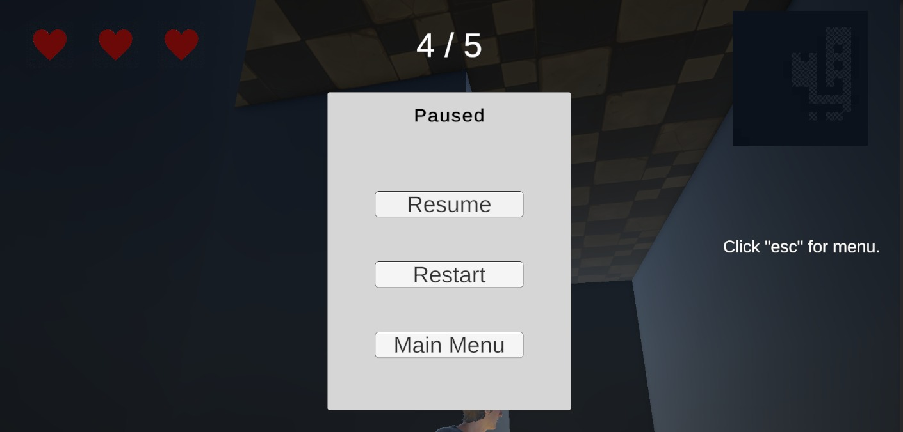
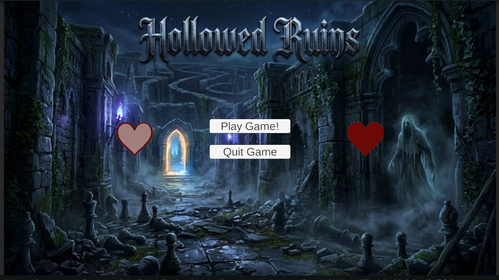
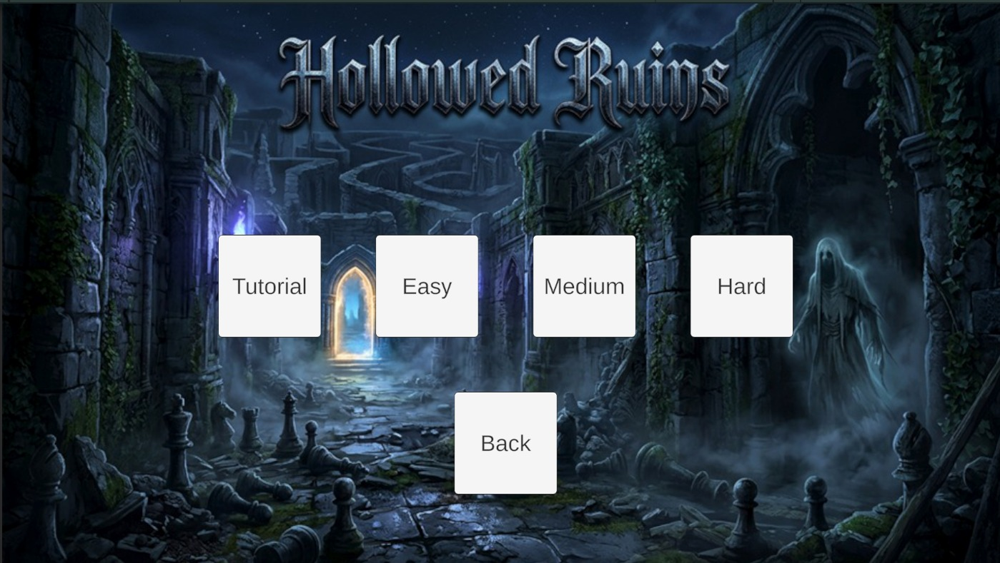

Figure 1. Core gameplay flow showing exploration, Warden pressure, chess duel resolution, and escape progression.
Course: CMPS434
Section: L01
Instructor: Dr. Osama Halabi
Team: Majid Marzouq (202309136), Oluwadamilola Olajide (202109926), Abdullah Hamed (202109951), Mohamad Allouh (201904335)
Hollowed Ruins is a single-player third-person horror exploration game built around two pressure loops:
The project’s unique identity comes from combining spatial tension with tactical problem solving. The player is never only running and never only thinking. Progress requires success in both spaces.
6000.3.9f1The player enters a cursed fortress beneath Ashen Hollow and becomes trapped in the shifting ruins of Lord Aldric Voss, now reborn as the Warden. To escape, the player must recover the broken pieces of the Warden's Seal while avoiding capture. Each capture forces a chess duel. Each loss costs a heart. Three losses and the fortress claims another prisoner.
Deep beneath the hills of Ashen Hollow lies a fortress no map remembers. It was built by Lord Aldric Voss, a chess grandmaster, occultist, and tyrant who believed the mind was the truest prison. He designed the stronghold as an ever-shifting labyrinth and tested prisoners through ritualized chess contests, taking pieces of their lives whenever they lost.
When Aldric died, his will fused with the fortress itself. He became the Warden, a ghostly intelligence tied to the stone, the darkness, and the maze.
The player is an urban explorer who enters the ruins searching for history and treasure, only to become trapped inside the living prison. The goal becomes survival, recovery of the shattered seal, and escape.
Figure 1. Core gameplay flow showing exploration, Warden pressure, chess duel resolution, and escape progression.
3 hearts| Condition | Result |
|---|---|
| Collect all key pieces and enter the portal | Win |
| Lose all 3 hearts through chess duel failures | Game Over |
The central special mechanic of the game is the conversion from chase gameplay into board-based challenge gameplay. This creates a rhythm of panic followed by tactical problem solving.
When the player reaches one heart:
Q activates a dash with a cooldownSpace enables jump
The maze layout changes per run, but remains readable and solvable.
The minimap reveals explored cells over time, giving a measured sense of progress without fully removing uncertainty.
The maze is generated at runtime and is intended to feel:
After generation, the maze places:
The portal begins hidden and is only revealed after all key pieces are collected.


| Level | Maze | Keys | Patrol Speed | Chase Speed |
|---|---|---|---|---|
| Tutorial | 7x7 | 2 | 3 | 6 |
| Easy | 12x12 | 3 | 4 | 8 |
| Medium | 15x15 | 4 | 5 | 9 |
| Hard | 17x17 | 5 | 6 | 10 |
The Warden is the game’s primary antagonist and pressure source.
| State | Description |
|---|---|
| Patrol | Moves through the maze using NavMesh destinations |
| Chase | Pursues the player after detection |
| Stun | Temporarily halted after certain duel outcomes |
NoiseSystemChessDuelChess encounters are designed to:
4x4DontLosePieceProtectPieceCaptureTargetSurviveNTurnsThe ghost AI uses a lightweight minimax-based move choice. This keeps the duel system readable and consistent without overbuilding a full tournament-grade chess engine.
| Element | Purpose |
|---|---|
| Hearts | Read remaining lives |
| Key Counter | Track objective progress |
| Portal Prompt | Signal exit phase |
| Ghost Warning | Signal chase state |
| Minimap | Support navigation and discovery |
| Heartbeat Overlay | Emphasize danger in final-heart mode |
| Dash Indicator | Show cooldown and readiness |


Audio should do more than decorate the environment. It should function as tension delivery and behavioral feedback.
Assets/_Scenes/MainMenu.unityAssets/_Scenes/LevelTutorial.unityAssets/_Scenes/LevelEasy.unityAssets/_Scenes/LevelMedium.unityAssets/_Scenes/LevelHard.unity

| Folder | Responsibility |
|---|---|
Scripts/Core |
Game state, health, noise, level tuning |
Scripts/Player |
Player movement and spawn support |
Scripts/Maze |
Procedural generation, collection, exit flow |
Scripts/Ghost |
AI, animation bridge, enemy support |
Scripts/Chess |
Duel rules, board logic, scenarios, evaluator, AI |
Scripts/UI |
HUD, minimap, menus, duel board, screens |
| System | Responsibility |
|---|---|
GameStateManager |
Global state control between exploration, duel, win, and game over |
HealthSystem |
Heart tracking and defeat trigger |
NoiseSystem |
Broadcasts sound events to AI |
LevelConfig |
Difficulty tuning per scene |
PlayerController |
Movement, look, sound emission, last-heart abilities |
MazeGenerator |
Runtime maze generation, object placement, NavMesh prep |
PieceCollectionSystem |
Key tracking and portal reveal |
GhostAI |
Warden state machine and pursuit logic |
ChessDuelManager |
Duel orchestration and resolution |
ChessBoard |
Pure 4x4 board logic |
GhostChessAI |
Enemy move selection in duels |
HUDController |
Exploration HUD and warning systems |
UIManager |
Screen visibility by game state |
Assets/DungeonModularPackAssets/Art/MixamoAssets/Art/AnimationsPlayerAnimator.controllerCreepAnimator.controllerAssets/Audio/Ambient/Ambient ruins.mp3Assets/Audio/Music/Chess_duel.mp3Assets/Audio/SFX/Ghost_Alert.mp3Assets/Audio/SFX/Ghost_Roar.mp3Assets/Audio/SFX/FootSteps_Run.wavAssets/UIAssets/UI/Sprites/Chess_PiecesAssets/TextMesh ProEach gameplay scene should contain:
CharacterController, PlayerInput, and PlayerControllerNavMeshAgent, GhostAI, and GhostAnimatorPlayerController currently includes:
P to force a chess duelL to remove one heartThese are useful for testing, but should be removed or gated before final submission.
GameStateManager uses DontDestroyOnLoad, so duplicate manager setups must be avoidedMainMenuManager stores scene names as Inspector stringsPlayerSpawner and GhostSpawner appear legacy compared with the current procedural actor positioning pathChessBoardUI includes a lastMoveColor field that is currently unused in the refresh path| Member | Role | Deliverables |
|---|---|---|
| Majid Marzouq (202309136) | Programmer | Maze generation, player movement, ghost AI, chess system, health system, noise system, technical gameplay implementation |
| Oluwadamilola Olajide (202109926) | Level Designer | Level layout, gameplay space design, maze tuning, environmental setup, pacing of exploration spaces, animation integration |
| Abdullah Hamed (202109951) | Sound, Music & 2D Elements | Ambient ruins audio, ghost alert cues, chess duel music, scream SFX, sprites, HUD-facing 2D elements |
| Mohamad Allouh (201904335) | Story Teller & Presentation | Narrative development, story direction, lore framing, presentation structure, project presentation support |
The Ouroboros King for tactical puzzle identityPhantom Abyss for pressured exploration and threat presenceDifferentiation:
The Warden is both hunter and strategist. The player does not simply evade danger or solve isolated puzzles. They must survive pursuit and defeat the mind behind the prison.
Last updated: 2026-05-09